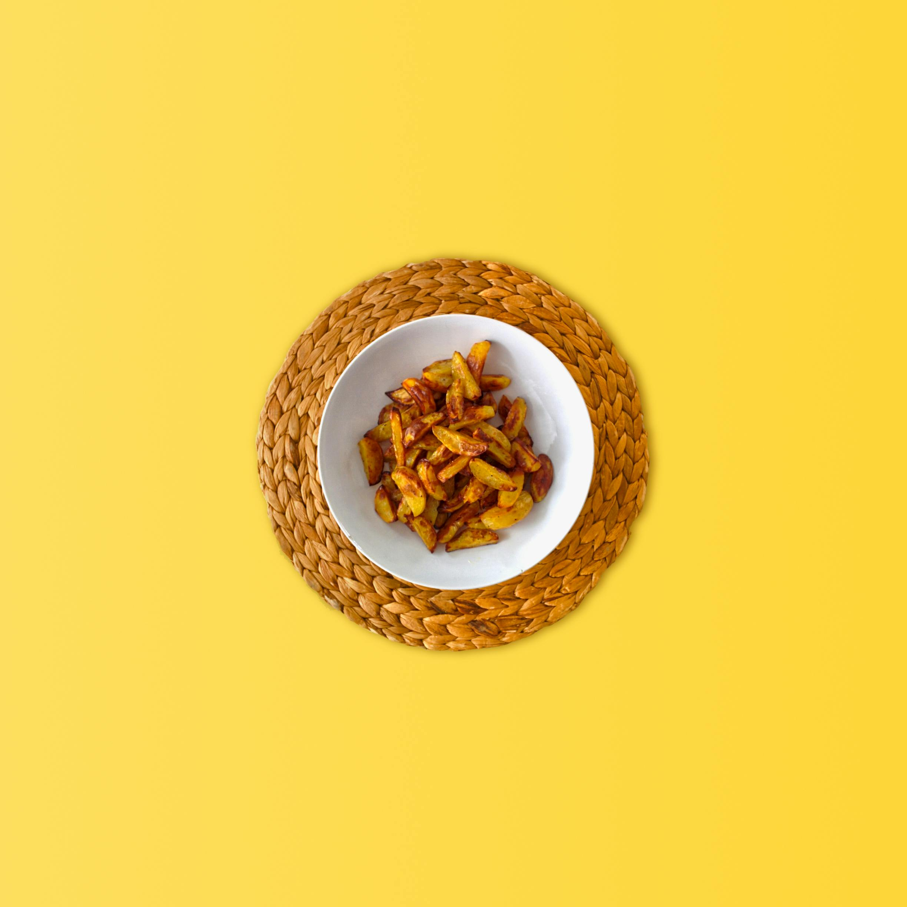

Fried potatoes

Description
Ingredients
- Potatoes (not mash potatoes)
- Canola oil
- Salt
- Optional: potato seasoning
Steps
- Heat pan
- Add oil and make sure it covers the entire pan
- Add potatoes, shake to spread
- Shake after one minute, repeat two or three times
- Add pinch of salt
Home